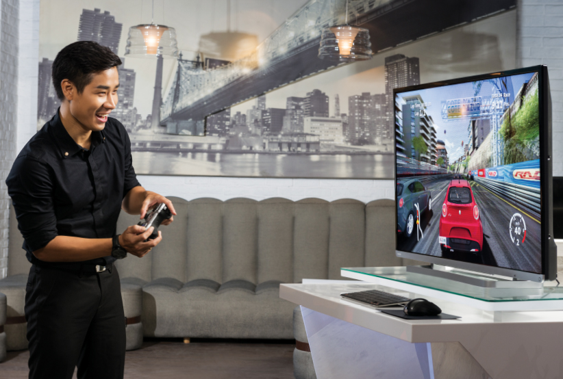
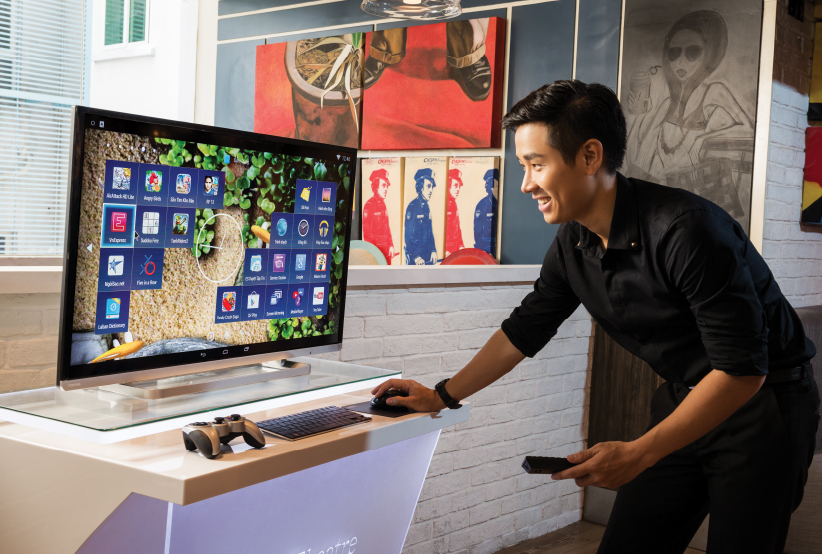
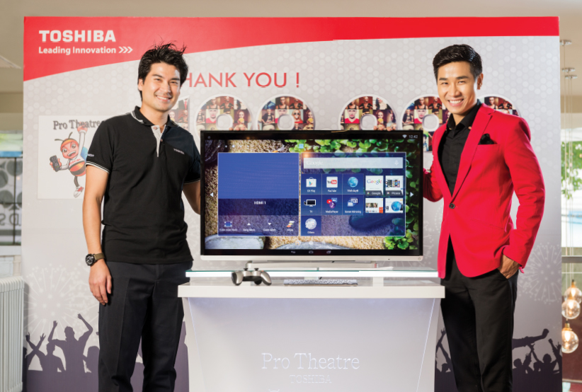

Pro Theatre L5450 – Một phân hạng TV mới?
“Tôi có thể nói rằng chiếc TV này thông minh hơn bất cứ sản phẩm Smart TV nào hiện có trên thị trường”, người dẫn chương trình Nguyên Khang đã tự tin khẳng định khi anh đang tìm hiểu về dòng TV Toshiba mới – Pro Theatre L5450. “Nó cũng hoạt động tốt như những Smart TV hiện có nhưng khi duyệt web bạn có thể sử dụng thêm 1 bàn phím như một chiếc máy tính. Nhưng không những vậy, TV này còn có thể hoạt động như một điện thoại thông minh trên một màn hình TV lớn. Có lẽ bởi vì nó được chạy trên hệ điều hành Android chăng?”
Có lẽ không cần giới thiệu nhiều về Nguyên Khang vì hiện nay anh la gương mặt người dẫn chương trình quen thuộc với nhiều show truyền hình như X-Factor... Và khi đề cập đến sản phẩm mới, Nguyên Khang lập tức trở về phong cách của một người dẫn chương trình với cách nói và bình luận chuyên nghiệp, như khi anh cầm mic: “Khang may mắn đã từng học trong lãnh vực kỹ thuật công nghệ, nên có đôi chút thuận lợi hơn khi tìm hiểu các sản phẩm high-tech như thế này. Khang có thể nói với các bạn sản phẩm Toshiba Pro Theatre L5450 này thật sự “Thông minh” hơn hẳn các sản phẩm khác và chúng ta phải gọi đó là “Đột phá”.
Sự đột phá của “Smart TV”
Vì vậy đây thực sự la thách thức của Toshiba nhằm mang lại sự cải tiến vượt bậc trong thế giới Smart TV “Làm thế nào Smart TV có thể thông minh hơn?” Như Nguyên Khang đã sáng suốt khi nhận xét Toshiba Pro Theatre L5450 mới được trang bị hệ điều hành Android 4.4, hay còn gọi là “Kit-Kat”, thay thế phiên bản cũ của hệ điều hành Android 4.2 mang tên “Jelly Bean”.
Nếu bạn đang sử dụng smartphone Android, bạn sẽ thấy bất ngờ khi giao diện của Pro Theatre L5450 trở nên gần gũi hơn như một chiếc smartphone, tiện dụng hơn, linh hoạt hơn. Và điều quan trong hơn là, với các Smart TV hiện có chỉ có thể sử dụng vài trăm ứng dụng, nhưng với Pro Theatre L5450 mới có thể cho phép chúng ta sử dụng tới vài ngàn ứng dụng bao gồm cả những ứng dụng game như ‘GT Racing 2’ hay ‘Real Football’ và bạn có thể thỏa thích chơi trên màn hình TV lớn với hình ảnh và âm thanh đặc sắc.
Trong khi trải nghiệm trò đua xe với Pro Theatre L5450, Nguyên Khang chia sẻ thêm về những thách thức trong việc tìm kiếm một chiếc TV thông minh hơn cả Smart TV. “Không đề cập đến số lượng ứng dụng hiện có, tôi nghĩ Pro Theatre TV thông minh hơn hẳn ở chỗ nó còn hỗ trợ những thiết bị điều khiến, cho phép người dùng trải nghiệm những trò chơi mà trước đây chúng ta chỉ có thể chơi trên màn hình di dộng nhỏ, nay chúng ta đã có thể trải nghiệm trên màn hình lớn và đẹp hơn. Đây chắc chắn là cải tiến thông minh hơn trong giải trí ngoài mục đích thông thường là xem các chương trình truyền hình.”

Đầy hứng khởi, Nguyên Khang cho biết: “Tôi không thể tin rằng đây là một trò chơi tôi thường chơi trên chiếc điện thoại thông minh!”
Trò chơi chúng tôi thường chơi trên điện thoại, bây giờ chúng tôi có thể chơi trên một màn hình TV lớn hơn, đẹp hơn.
*Chú ý: Tháng 9/2014, Toshiba Pro Theatre L5450 hỗ trợ bộ điều khiển chơi game Mars G01 hiệu Transmart.
Nguyên Khang tiếp tục đề cập đến lợi ích của hệ điều hành Android 4.4 Kit-Kat: “bên cạnh những trò chơi, bạn có biết toàn bộ hệ điều hành trên TV sẽ được cải thiện không? Bạn sẽ linh hoạt hơn trong việc thiết lập màn hình chủ với những ứng dụng và tiện ích yêu thích, cài đặt màn hình bạn muốn hoặc làm việc trên dữ liệu với ứng dụng Office... Đây quả thực còn hơn cả cải tiến, đó là sự đột phá lớn!”
Vì một chiếc TV chất lượng thật sự
Với góc nhìn của một người dẫn chương trình chuyên nghiệp, Nguyên Khang tìm hiểu thêm và đề cập đến mặt “chuyên nghiệp” của ProTheatre L5450: “Chiếc TV này tự động điều chỉnh không chỉ hình ảnh mà còn cả âm thanh tuỳ thuộc vào nội dung, đúng không? Không chỉ là hình ảnh đẹp, tôi thích nhất ở sự tỉ mỉ và chu đáo. Ý tôi là, đó thực sự là chất lượng Nhật Bản.” Thật ra, những gì Nguyên Khang đang đề cập được gọi là tính năng “Intelligent Scene Optimizer”. Tính năng thông minh này xác nhận nội dung trình chiếu từ TV và tự động điều chỉnh hình ảnh, âm thanh phù hợp để có được chất lượng hình ảnh đẹp nhất. Có tất cả 6 lựa chọn về nội dung và 3 chế độ hình ảnh, điều đó có nghĩa là TV sẽ tự động lựa chọn hình ảnh chất lượng cao nhất trong số 18 sắc thái hình ảnh để cho bạn thưởng thức chương trình truyền hình với chất lượng tốt nhất.
Thêm vào đó, ProTheatre L5450 còn trang bị tính năng “Intelligent Auto View” tự động điều chỉnh độ sáng, ánh sáng đèn nền và nhiệt độ màu phù hợp với môi trường xung quanh cho bạn tận hưởng những thước phim đặc sắc, sống động như khi bạn đang xem tại rạp chiếu phim. Trong lĩnh vực điện ảnh, tính năng Intelligent Auto View còn thể hiện màu sắc và chất lượng hình ảnh chân thật như một thiết bị kiểm tra hình ảnh chuyên nghiệp mà các đạo diễn thường dùng để kiểm tra chất lượng hình ảnh sau các cảnh quay. Điều đó có nghĩa là chiếc TV này hoàn toàn đáp ứng các yêu cầu khắc khe của một đạo diễn phim khó tính nhất.
Chúng ta cũng không quên một điều rằng tất cả những tính năng được thực hiện bởi bộ vi xử lý CEVO Engine Premium, điểm chính trong công nghệ của Toshiba với kĩ thuật hình ảnh mới nhất cho phép xử lý hình ảnh cao nhất hiện nay.
“Tôi thích tinh thần đó, Toshiba đã tạo ra một chiếc TV thông minh hơn với hệ điều hành Android, nhưng không chỉ dừng ở đó nó theo đuổi sự hoàn mỹ và cải tiến hơn những gì một chiếc TV có thể làm, đó mới thực sự là đỉnh cao của chất lượng.”
Nguyên Khang tiếp tục chia sẻ, “Tôi nhận ra từ kinh nghiệm bản thân rằng sự cẩn trọng trong từng vấn đề về nghề nghiệp luôn mang lại hiệu quả công việc và sự tin tưởng cao nhất. Làm người dẫn chương trình và việc sản xuất TV có lẽ khác nhau rất nhiều, nhưng tôi tin có một điểm chung ở đây chính là tinh thần theo đuổi sự hoàn mỹ.” Nguyên Khang đã có thời gian trải nghiệm và học hỏi ở một trong những trường Đại học hàng đầu tại Nhật Bản và anh hiểu được tinh thần đó của Toshiba là tạo ra những sản phẩm chất lượng, và đó là nguồn gốc về sự ra đời của Toshiba Pro Theatre L5450.
Cuối cùng, Nguyên Khang đã kết luận với một dòng bình luận miêu tả chân thực nhất về Toshiba Pro Theatre L5450, “Chúng ta bắt đầu thấy sự xuất hiện của nhiều Smart TV trên thị trường, nhưng một lần nữa đây thực sự là chiếc TV thông minh hơn, một sự lựa chọn thông minh hơn. Thật sự khó để xếp dòng TV này như một Smart TV bởi lẽ xét về chất lượng của nó, TV này quả thực là độc nhất vô nhị.”
 Toshiba Pro Theatre L5450 với Android 4.4 Kit-Kat TMGiao diện thuận tiện và linh hoạt hơn – Sự lựa chọn thông minh cho Smart TV.
Sự kiện chúc mừng 100,000 fans trên trang Facebook Toshiba
Toshiba đã tổ chức sự kiện chúc mừng 100,000 fans trên trang facebook Toshiba Việt Nam. Với hơn 100 khách đăng ký qua Facebook tham gia sự kiện đã có dịp tương tác với nhiều sản phẩm mới của Toshiba như ProTheatre L5450… Một trong những khách tham gia sự kiện, anh Tân đã rất phấn khởi chia sẻ: “Chúng ta không thể mua TV hay thiết bị điện lạnh hằng ngày, nhưng tôi nghĩ sự kiện này là điều tốt, thông qua đó chúng tôi có thể cảm nhận được sự quan tâm và gắn kết với Toshiba hơn.” Ông Takuro Teruya, giám đốc bộ phận Kinh doanh và Marketing của Toshiba Việt Nam đã phát biểu: “Đến từ Nhật Bản, chúng tôi luôn muốn mang đến sự hạnh phúc và hài lòng cho những khách hang thân quen với chất lượng tốt nhất có thể, không chỉ mang đến sản phẩm, tôi nghĩ việc kết nối khách hàng qua các phương tiện truyền thông cũng là một trong những cách tốt nhất để chia sẻ với họ. Tôi rất vui khi thấy nhiều nụ cười hạnh phúc hôm nay, chúng tôi sẽ tiếp tục nâng cao và đẩy mạnh trong việc tương tác truyền thông này, không chỉ nhằm mục đích quảng bá, mà nhằm tạo ra sự gắn kết giữa người tiêu dùng và tình yêu của chúng tôi đối với Việt Nam.”
 Ông Takuro Teruya và Nguyên Khang